A SwiftUI iPhone app that turns AeroPress recipes into a guided, timed brew, and remembers how each cup turned out.
Screen recording from the iOS Simulator
From finding a recipe to logging the cup.
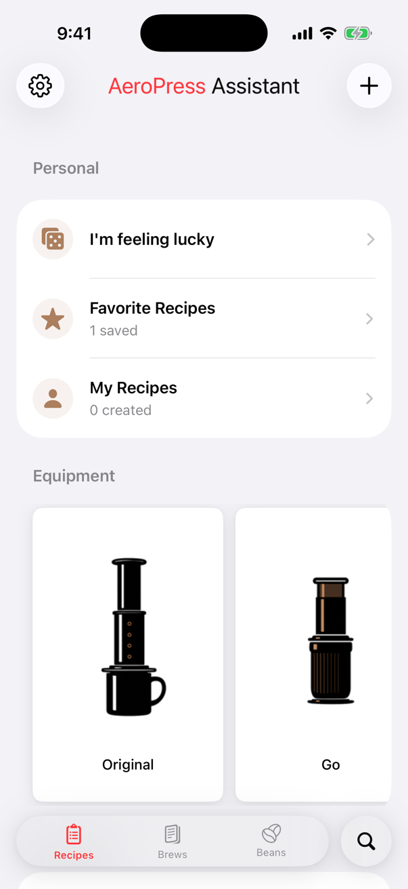
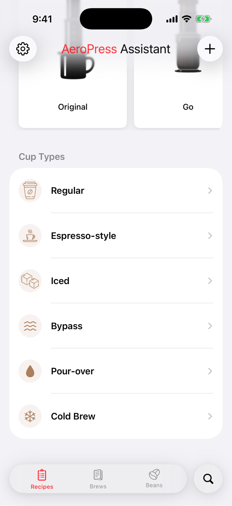
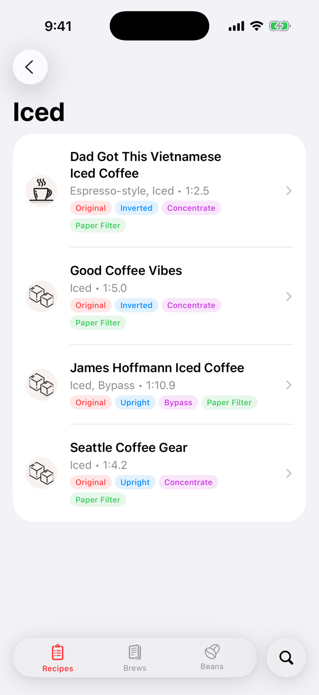
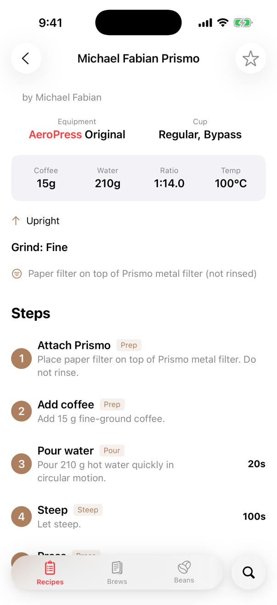
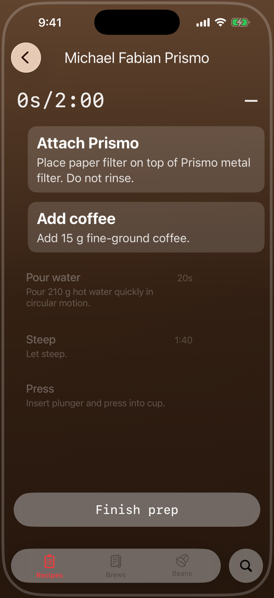
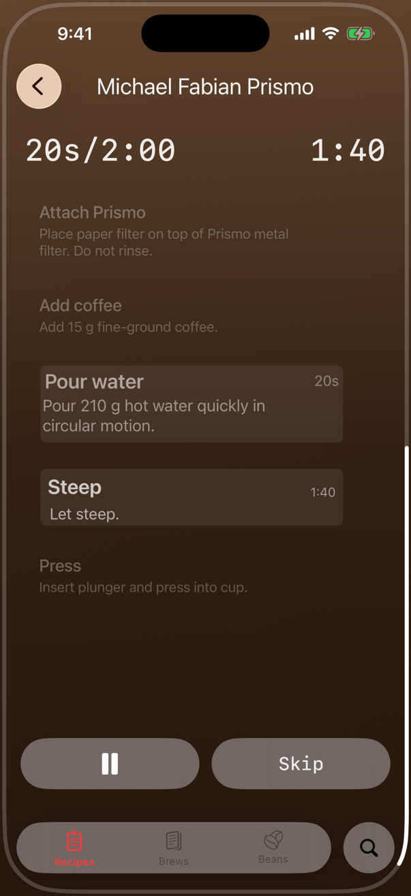
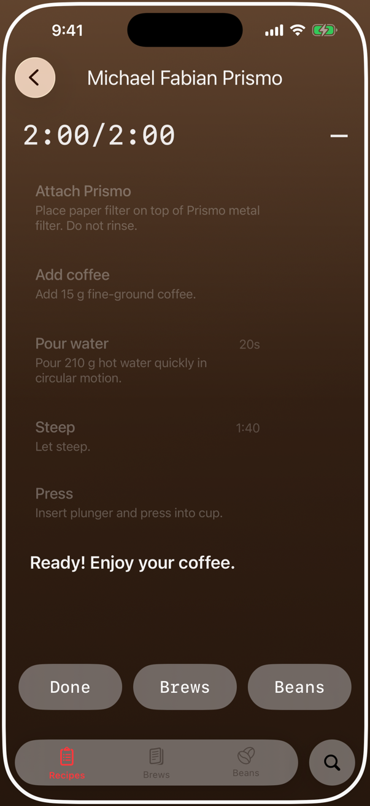
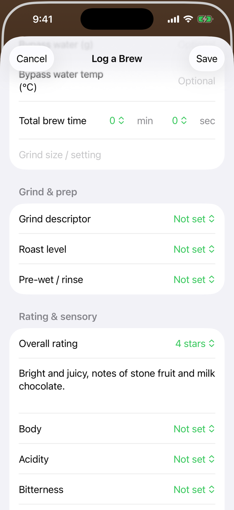
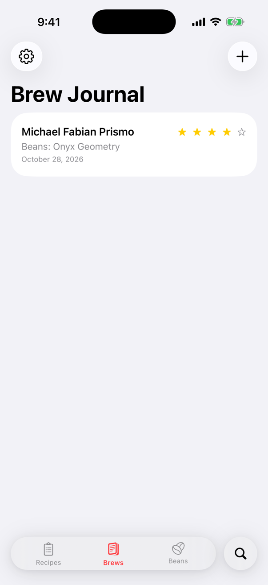
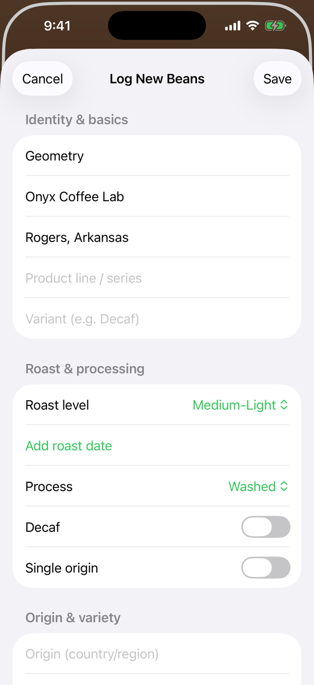
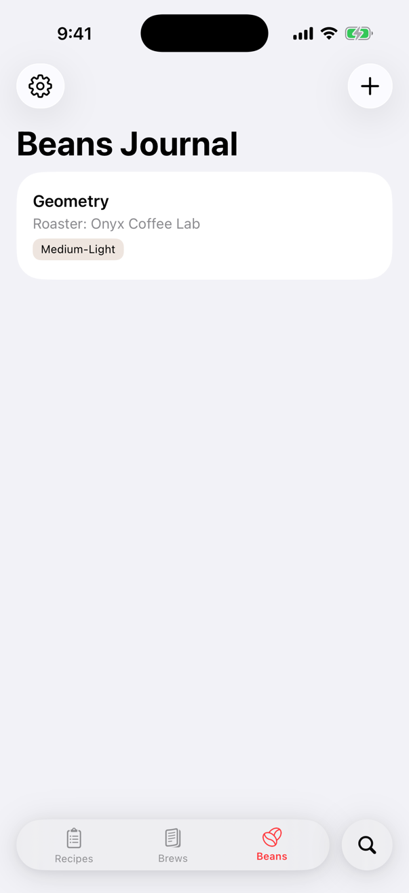
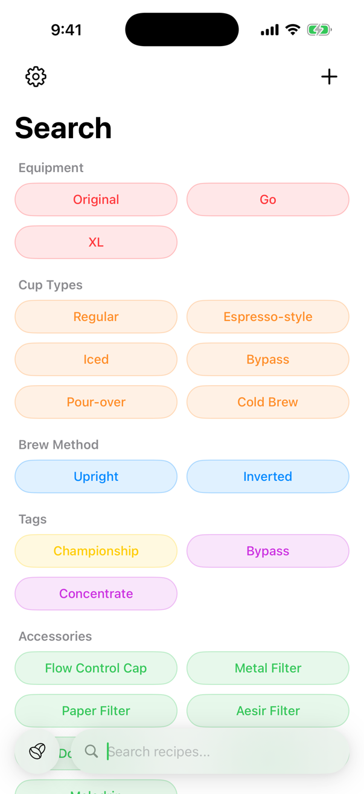
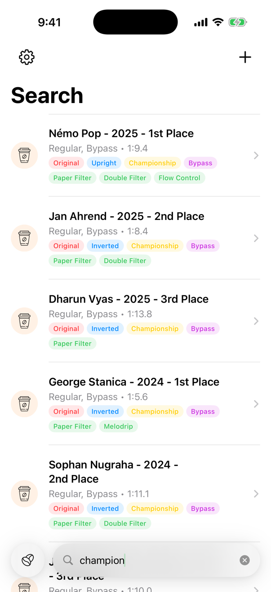